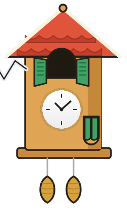

КУКУшка
ку-ку!
КУКУшка
ку-ку!
Твои дела — у неё в голове.
Не у тебя.
ИИ-напарник по личной эффективности прямо в Telegram. Скажи словами или голосом — запишет, напомнит, поможет разгрести.
Начать в Telegramбез установки · за 30 секунд

Завтра в 11 звонок в банк, в 15 забрать Машу из сада, и дожать отчёт к пятнице
Записала ✓ Три дела:
🕚 11:00 — звонок в банк
🧒 15:00 — забрать Машу
📄 Отчёт — напомню в четверг, чтобы успеть без ночёвки
🕚 11:00 — звонок в банк
🧒 15:00 — забрать Машу
📄 Отчёт — напомню в четверг, чтобы успеть без ночёвки
0:06
Услышала: «купить молоко по дороге» — напомню в 18:30 🥛
Что это
Не просто список задач — думающий партнёр
КУКУшка — умный персональный ассистент, который ведёт твои дела, понимает обычную речь и голос и помогает успевать больше без выгорания. У неё есть характер: она заботливая, честная и слегка птичья. Она не ждёт команд — она разговаривает.
Что умеет
Всё, чтобы день сложился
💬
Понимает естественную речь
Пишешь как другу — она сама заводит задачу с нужным временем
🎙️
Голосовой ввод
Надиктовал на ходу — распознала и записала
⏰
Умные напоминания
Заранее и вовремя, повторяющиеся дела — хоть «раз в 3 дня»
📅
Любой календарь
Google, Яндекс, iCloud, Mail.ru — двусторонняя синхронизация
🧭
Живой ИИ-диалог
Советы по эффективности под твою ситуацию, а не шаблоны
📊
Сводки дня и недели
Утром — план, вечером — итог, в конце недели — честная оценка
А когда завал — она рядом 🤍
всё, паника, 12 задач, ничего не успеваю 😵
Спокойно, разберём вместе 🤍 Жёсткий дедлайн сегодня только у двух. Начнём с отчёта — 40 минут, пока есть силы. Остальное я подвину и напомню. Погнали?
Режим коуча: приоритеты, «важное vs срочное», разбор завалов по проверенным методикам — GTD, матрица Эйзенхауэра, MIT-рефлексия.
Зачем
Что меняется через неделю
🧠
Голова разгружена
Не держишь дела в уме — всё у КУКУшки, и она не забывает
✅
Меньше забытого и просроченного
Напоминания приходят тогда, когда ещё можно успеть
🎛️
Ощущение контроля над днём
Утром понятно, за что браться; вечером видно, что сделано
🌿
Ритм без выгорания
Помогает держать темп — и честно говорит, когда пора выдохнуть
Как работает
Три шага — и всё под контролем
1
2
Познакомься с ней
Расскажет, что умеет, спросит, как тебя зовут и когда удобно получать напоминания
3
Ставь задачи — дальше она всё сама
Запишет, напомнит вовремя, разгрузит голову и не даст прокрастинировать
Под капотом
Серьёзные технологии.
Никакой возни для тебя.
🤖
Больше 6 топовых нейросетей — под каждую задачу своя: лёгкая на быстрые ответы, сильная на коучинг
🎧
Распознавание голоса — говори на ходу, поймёт за секунды
☁️
Облачная edge-инфраструктура — быстро и надёжно, ничего не нужно устанавливать
📍
Там, где ты уже живёшь — сейчас Telegram, на подходе Яндекс Станции, Max и другие точки
Что дальше
КУКУшка растёт
Ближайшие планы — то, о чём чаще всего просят первые пользователи:
🏷 Категории задач
🔔 Персональные напоминания под каждое дело
📅 Глубокая работа с календарём
👥 Командные сценарии
📱 Мини-приложение
🔊 Навык в Яндекс.Алисе
Попробуй — она уже ждёт
Первое дело можно завести прямо сейчас, одним сообщением.
Открыть в Telegramбесплатно · без установки · за 30 секунд
КУКУшка · @cuckoo2do_bot · напомнит вовремя — как кукушка из часов, только умная